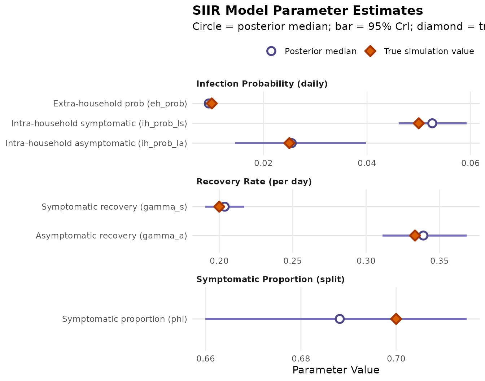

Multiple Infection Compartments
Claire P. Smith
multiple_infection_compartments.RmdSIIR model (multiple infection compartments)
Lets consider an infection process model where we want to have separate compartments for symptomatic and asymptomatic infection.
Simulate data
We will use data simulated from a SIIR model for 500 households. We will assume that all individuals start susceptible. The per day intra-household infection probability is 5% and the daily extra-household infection probability is 1%.
head(siir)## t part_id enroll state hh_size hh_id pcr igg symp
## 1 1 1 1 1 5 1 0 0 0
## 2 1 2 1 1 5 1 0 0 0
## 3 1 3 1 1 5 1 0 0 0
## 4 1 4 1 1 5 1 0 0 0
## 5 1 5 1 1 5 1 0 0 0
## 6 2 1 1 1 5 1 0 0 0Model specification
In addition to the data, the user needs to specify the underlying model structure, which involves two components:
The infection process model which specifies the underlying compartmental model structure.
The observation process model which specifies the probability of observing a positive outcome given an individual is in each compartment of the infection process model.
Infection process model
In this infection process model, infected individuals are split into
two compartments, symptomatic infections (Is) and
asymptomatic infections (Ia). The proportion which goes
into the symptomatic compartment is governed by the parameter
split. Note that although there are two infectious
compartments we only need to provide one value for split as the model
enforces that the proportion going to the second infectious compartment
is 1-split. Here we are providing a parameter name to this
argument (split = "phi") indicating that we want the model
to fit this parameter. We could also provide a numeric value for the
model to use directly. We also use the
mult_ih_inf_probs = TRUE argument to indicate that we would
like the two infectious compartments to have separate (rather than a
single shared) intra-household infection probability.
Observation process model
The observation model is composed of a series of named vectors. Each vector corresponds to an observation type. Each entry in the vector is named for the corresponding compartment in the infection process model. The value is the probability of observing a positive observation given the individual is in the compartment.
In this example we have three observation types, the first which is likely to be positive when a person is actively infectious (e.g. PCR test results), the second which is more likely to be positive when the person is recovered and immune to infection (e.g. IgG antibody), and the third which is an indicator of whether someone is experiencing symptoms.
obs_process <- make_observation_model(
pcr = c("S" = 0.05, "Is" = 0.95, "Ia" = 0.95, "R" = 0.05),
igg = c("S" = 0.01, "Is" = 0.01, "Ia" = 0.01, "R" = 0.8),
symp = c("S" = 0.03, "Is" = 1-1e-10, "Ia" = 0.03, "R" = 0.03))Now we are ready to run the model!
## Inputs
# 1. Infection process model
# 2. Observation process model
# 3. Raw data
# 4. Covariates (optional)
# 5. Starting state probabilities
siir_res <- run_model(inf_model = inf_process,
obs_model = obs_process,
data = siir,
init_probs = c(1-3*1e-10, 1e-10, 1e-10, 1e-10),
stan_opts = stan_options(iter = 1000))Now let’s look at the model results using the posterior
package.
# The output from the model in the previous code chunk is available in the
# siir_res package data object
# Get summary statistics. Parameters are returned on the natural (model) scale,
# so no back-transformation is needed.
draws_sum <- summarise_draws(siir_res, "mean", "median",
~ quantile2(.x, probs = c(0.025, 0.975))) |>
mutate(var_type = c(rep("Infection probability", 3),
rep("Recovery rate", 2),
"Symptomatic proportion"))
# "True" values from underlying simulation
draws_sum$true_value <- c(0.01, 0.05, 0.025, 0.2, 1/3, 0.7)
draws_sum## # A tibble: 6 × 7
## variable mean median q2.5 q97.5 var_type true_value
## <chr> <dbl> <dbl> <dbl> <dbl> <chr> <dbl>
## 1 eh_prob 0.00943 0.00943 0.00876 0.0102 Infection probability 0.01
## 2 ih_prob_Is 0.0526 0.0526 0.0461 0.0593 Infection probability 0.05
## 3 ih_prob_Ia 0.0258 0.0255 0.0145 0.0398 Infection probability 0.025
## 4 gamma_s 0.204 0.204 0.191 0.217 Recovery rate 0.2
## 5 gamma_a 0.339 0.339 0.311 0.369 Recovery rate 0.333
## 6 phi 0.688 0.688 0.660 0.715 Symptomatic proportion 0.7We can also visualize the parameter estimates alongside the true simulation values:
draws_plot <- draws_sum |>
mutate(
category = factor(
c(rep("Infection Probability (daily)", 3),
rep("Recovery Rate (per day)", 2),
"Symptomatic Proportion (split)"),
levels = c("Infection Probability (daily)", "Recovery Rate (per day)", "Symptomatic Proportion (split)")
),
label = factor(
c("Extra-household prob (eh_prob)",
"Intra-household symptomatic (ih_prob_Is)",
"Intra-household asymptomatic (ih_prob_Ia)",
"Symptomatic recovery (gamma_s)",
"Asymptomatic recovery (gamma_a)",
"Symptomatic proportion (phi)"),
levels = rev(c("Extra-household prob (eh_prob)",
"Intra-household symptomatic (ih_prob_Is)",
"Intra-household asymptomatic (ih_prob_Ia)",
"Symptomatic recovery (gamma_s)",
"Asymptomatic recovery (gamma_a)",
"Symptomatic proportion (phi)"))
)
)
ggplot(draws_plot, aes(y = label)) +
geom_errorbar(aes(xmin = q2.5, xmax = q97.5), width = 0, color = "#7570b3", linewidth = 1) +
geom_point(aes(x = median, fill = "Posterior median"), size = 3, shape = 21, color = "#4d4785", stroke = 1.4) +
geom_point(aes(x = true_value, fill = "True simulation value"), size = 3, shape = 23, color = "#a63603", stroke = 1.4) +
facet_wrap(~category, scales = "free", ncol = 1) +
scale_fill_manual(
name = "",
values = c("Posterior median" = "#ffffff", "True simulation value" = "#d95f02"),
guide = guide_legend(override.aes = list(
shape = c(21, 23),
color = c("#4d4785", "#a63603"),
fill = c("#ffffff", "#d95f02")
))
) +
labs(
title = "SIIR Model Parameter Estimates",
subtitle = "Circle = posterior median; bar = 95% CrI; diamond = true simulation value",
x = "Parameter Value",
y = NULL
) +
theme_minimal() +
theme(
legend.position = "top",
legend.justification = "right",
panel.grid.minor = element_blank(),
panel.grid.major.y = element_line(color = "grey90"),
plot.title = element_text(face = "bold"),
strip.text = element_text(face = "bold", hjust = 0)
)